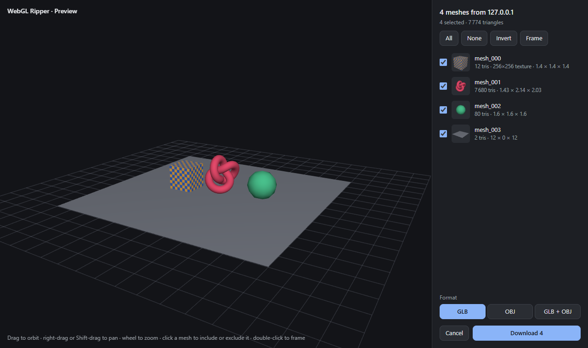
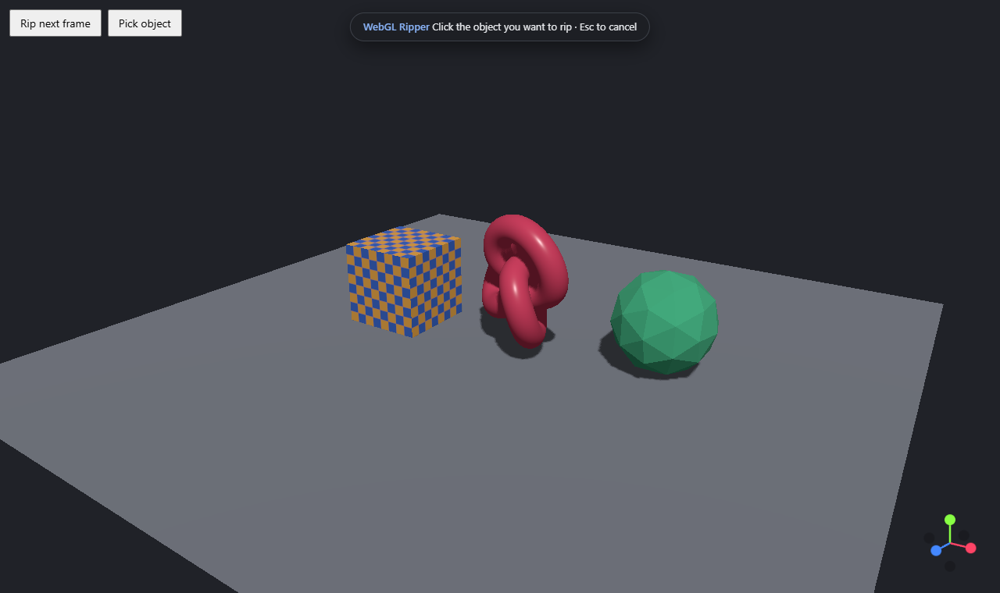
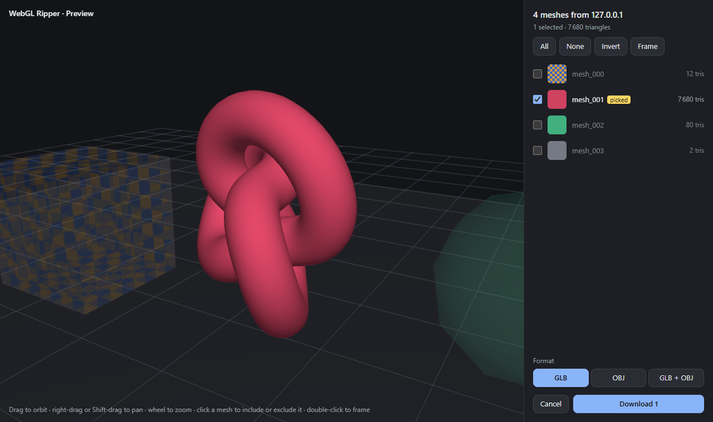

Скачайте 3D-модель с любого сайта
WebGL Ripper — бесплатное расширение для браузера. Оно перехватывает 3D-модели и текстуры, которые рисует WebGL-страница, и сохраняет их в GLB (glTF 2.0) или OBJ — сразу для Blender, Unity, Unreal или Godot.
Версия 1.1.3 · лицензия MIT · Chrome, Edge, Brave, Opera 121+ · Firefox 128+

Что умеет
GLB или OBJ
Один .glb со встроенными текстурами и PBR-материалами или OBJ + MTL + PNG в ZIP — или оба сразу.
Превью перед скачиванием
Покрутите захваченную сцену прямо на странице и выберите нужные меши.
Выбор кликом
Shift+Insert, клик по объекту — и сохранится только он, даже сквозь пост-обработку.
Готово к импорту
Меши на своих местах, модель стоит на «полу», вершины сварены, есть нормали и цвета материалов.
Чистый результат
Проходы теней и глубины, оси-гизмо и квадраты пост-обработки отбрасываются.
Точные текстуры
Настоящий размер, байт в байт, включая сжатые, float и прозрачные текстуры.
Работает с вашим движком
three.js, Babylon.js, PlayCanvas, Unity WebGL, Godot, Emscripten, обычный WebGL 1 и 2.
Приватно и легко
Никаких сетевых запросов. Никакой нагрузки на отрисовку, пока вы не нажали клавишу.
Сохранить один объект


Быстрее и точнее оригинала
Замеры против WebGL Ripper 0.6 от Rilshrink, обе версии в одном Chrome. Методика и все цифры.
| Тестовая страница | Оригинал 0.6 | WebGL Ripper 1.1.2 |
|---|---|---|
| Сцена three.js с тенями и пост-обработкой | все меши в начале координат, без нормалей, чужая текстура в 16 раз больше | на местах, нормали, цвета, правильная текстура — 0,17 с |
| 3000 вызовов отрисовки | за 3 мин файла нет, +1,3 ГБ памяти | 0,28 с, +42 МБ |
| 250 тыс. вершин, две 4K-текстуры | 3,9 с, страница зависла на 1,5 с, ZIP 60 МБ | 1,6 с (GLB), зависание меньше 0,2 с, ZIP 5,6 МБ |
| Память в стиле Unity / Emscripten | мусор | точно |
| WebGL создан во время загрузки страницы | пропущен | перехвачен |
| Время кадра, 3000 вызовов, без захвата | ≈ в 2 раза медленнее | без заметной разницы |
Установка и использование
- Скачайте
webglripper-…-chrome.zipили…-firefox.zipиз последнего релиза. - Chrome / Edge / Brave / Opera: распакуйте, откройте
chrome://extensions, включите режим разработчика, нажмите Загрузить распакованное расширение и выберите папку. Firefox:about:debugging#/runtime/this-firefox→ Загрузить временное дополнение… → zip-файл. - Откройте страницу с 3D-моделью и нажмите Insert. Выберите меши в превью и нажмите Download.
- Импортируйте файл в Blender: File → Import → glTF 2.0 или Wavefront (.obj).
WebGL Ripper не опубликован в Chrome Web Store и других магазинах; копии оттуда — не из этого проекта.
Вопросы
Как скачать 3D-модель с сайта?
Установите WebGL Ripper, откройте страницу, дождитесь появления модели и нажмите Insert. На странице откроется 3D-превью: выберите меши и нажмите Download — получите GLB или OBJ.
На каких сайтах работает?
На любых страницах с WebGL: просмотрщики на three.js, Babylon.js и PlayCanvas, игры на Unity WebGL и Godot, конфигураторы товаров, 3D-галереи. Не на страницах, где картинка приходит видеопотоком с сервера или рисуется из Web Worker.
Почему персонаж в T-позе?
Персонажи, анимированные на видеокарте, сохраняются в исходной позе: вершины двигает вершинный шейдер, а расширение сохраняет то, что загрузила страница.
Как это работает?
Расширение запускается внутри страницы раньше её скриптов, записывает вызовы отрисовки одного кадра — геометрию, текстуры и матрицы, — очищает их и записывает GLB или OBJ. Подробное описание.
Расширение отправляет мои данные?
Нет. Оно не делает ни одного сетевого запроса.
Можно ли так делать?
Модели и текстуры принадлежат их авторам. Сохраняйте только то, что вам разрешено использовать: свои работы, ресурсы под свободной лицензией или контент с разрешения, — и соблюдайте условия сайтов.